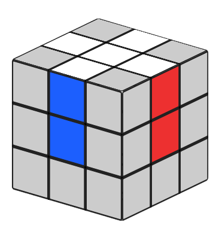
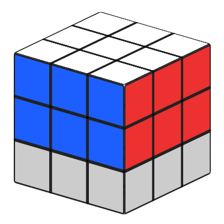
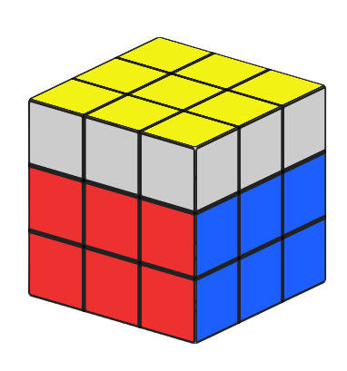
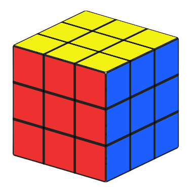

Dalam membuat cross biasa menggunakan warna putih dan membuat cross di layer bawah. Mengapa? Karena hal ini akan mempercepat transisi ke tahap F2. Dalam speed solving di kompetisi, akan ada waktu inspeksi 15 detik (kurang) untuk melihat kondisi cube setelah di scramble, sebelum kita mulai solve. Gunakan waktu inspeksi untuk planning langkah2 yg diperlukan untuk membuat cross.
metode
cfop
Ketika berbicara tentang teknik dalam menyelesaikan Kubus Rubik, kita harus menyebutkan metode Fridrich atau CFOP yang digunakan oleh sebagian besar speedcuber saat ini. Teknik yang dikembangkan oleh Jessica Fridrich ini membagi teka-teki menjadi beberapa lapisan dan harus menyelesaikan kubus lapis demi lapis menggunakan algoritma di setiap langkah , dengan tidak mengacaukan potongan yang sudah ada. Langkah-langkah tersebut adalah Cross , F2L , OLL dan PLL. Metode yang dikembangkan oleh Jessica Fridrich melibatkan menghafal banyak algoritma, namun ada hubungan logis di antara keduanya.
tahap 1 membuat cross

tahap 2 f2l (first two layer)

Dalam tahap first two layer kita melakukan pairing (memasangkan) antara 1 corner piece bottom layer dan satu edge piece layer kedua (tengah) untuk di masukan (slotting) ke posisinya. Tahap ini menurut saya adalah tahap yang paling penting dalam speed solving karena sebagian besar waktu akan dihabiskan di tahap ini. Dengan adanya 4 slot yang harus diisi berarti apabila rata2 kita membutuhkan 4-5 detik untuk pairing dan slotting di satu posisi, maka total waktu F2L adalah 16-20 detik. Apabila kita bisa memotong waktu tersebut hanya menjadi 2-3 detik per pasangan(pair), maka waktu F2L kita hanya 8-12 detik.
tahap 3 oll (orientate last layer)

Rumus OLL (Orientation Last Layer) bertujuan untuk memutar setiap blok tepi dan sudut di bagian atas rubik sehingga tepi berwarna sama menghadap ke atas dan sudut dengan warna yang sama membentuk pola tertentu. Teknik OLL dilakukan setelah memecahkan bagian tengah (middle layer) dan merupakan langkah kedua dalam algoritma CFOP (Cross-F2L-OLL-PLL). Rumus ini merupakan rumus dasar dalam permainan rubik yang dapat pelajari. Disarankan untuk mempelajari dan memahami rumus OLL secara keseluruhan sebelum mempelajari rumus PLL. Setiap pola OLL memiliki rumus yang khusus, dan diharuskan mengenali dan menguasai setiap pola dan rumusnya agar dapat menyelesaikan rubik dengan cepat.
tahap 4 pll (permutate last layer)

Rumus PLL (Permutation of the Last Layer) merupakan algoritma yang digunakan untuk memperbaiki posisi blok pada layer terakhir. Setelah OLL diselesaikan, PLL digunakan untuk memperbaiki posisi rubik pada layer terakhir sehingga rubik bisa Anda selesaikan sepenuhnya. PLL terdiri dari beberapa algoritma yang berbeda, dimana setiap algoritma akan memindahkan blok rubik pada layer terakhir dengan cara yang berbeda-beda. Setiap algoritma memiliki efek yang berbeda terhadap rubik, tergantung pada posisi blok yang perlu dipindahkan dan posisi rubik secara keseluruhan. Dalam mempelajari PLL, penting untuk menghafal setiap algoritma dengan benar, serta mengerti bagaimana cara menerapkannya pada rubik dengan efektif dan efisien.
© 2023. CFOP all by reserved